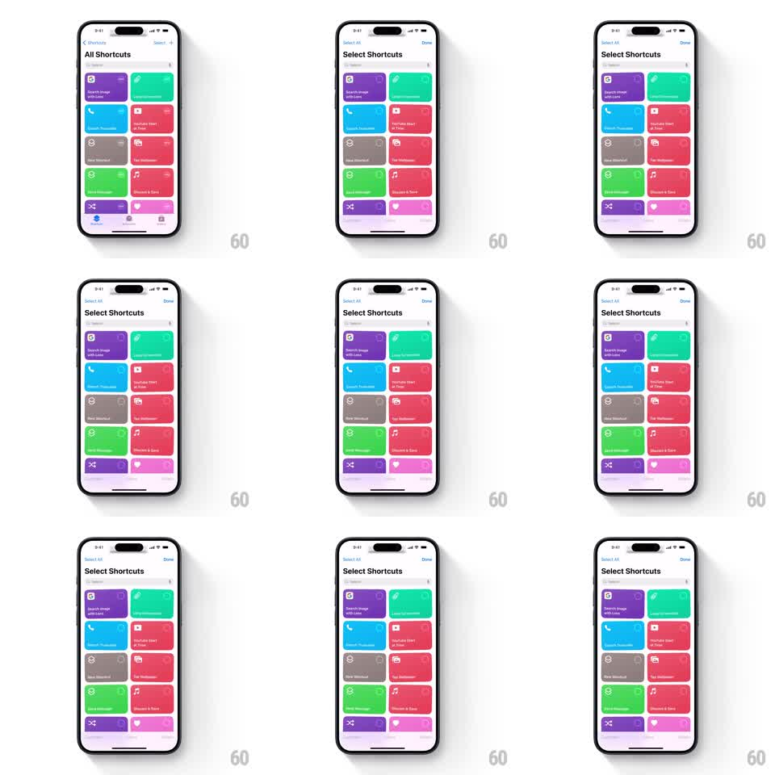

Media
Frame-by-frame

Rebuild this interaction 1:1: Apple Shortcuts' select mode - entering selection makes every shortcut card in the grid start a continuous, out-of-phase rotational wiggle, and exiting settles them all back to rest.

Rebuild this interaction 1:1: Apple Shortcuts' select mode - entering selection makes every shortcut card in the grid start a continuous, out-of-phase rotational wiggle, and exiting settles them all back to rest. ## Integration Integration: stack-agnostic spec - springs given as stiffness/damping, timed motions as duration + curve; map every value to your framework and animation library of choice. ## Scene All Shortcuts grid: 2-column masonry of colored rounded cards (purple, green, blue, red, gray, pink), each with an icon and title. Top bar reads "All Shortcuts" with a Select button. In select mode the bar becomes "Select Shortcuts" with Select All and Done. ## Motion spec Pattern: out-of-phase jiggle wiggle across a card grid. - On entering select mode, every card starts oscillating: rotation between roughly -1.5deg and +1.5deg, period ~250ms per card. - Each card gets a randomized phase offset (and a slight period jitter of +-10%) so neighbors never swing in sync - the field looks alive, not metronomic. - Cards enter the wiggle staggered from top-left (each card starts ~20ms after the previous). - Tapping a card toggles its selection check without interrupting its wiggle. - On Done, all cards ease their rotation to 0 over ~200ms, settling at slightly different moments. ## Calibration - Amplitude is tiny - over 2deg reads as broken layout, under 1deg reads as static. Stay near 1.5deg. - The phase randomization is the whole effect; in-phase wiggle looks like a screen shake. ## Reduced motion No wiggle. Selection state shown only by checkmarks and card dimming. ## Don't miss - The wiggle is rotation about each card's own center - cards do not translate. - The top bar swap (Select -> Select Shortcuts/Done) animates as a simple crossfade with the wiggle already running underneath.